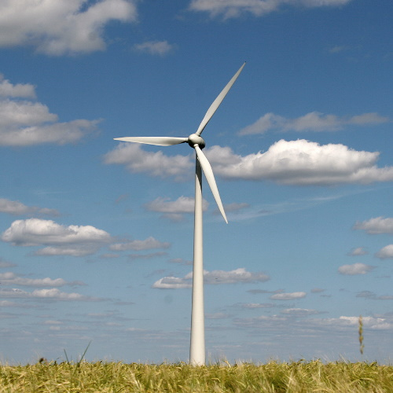
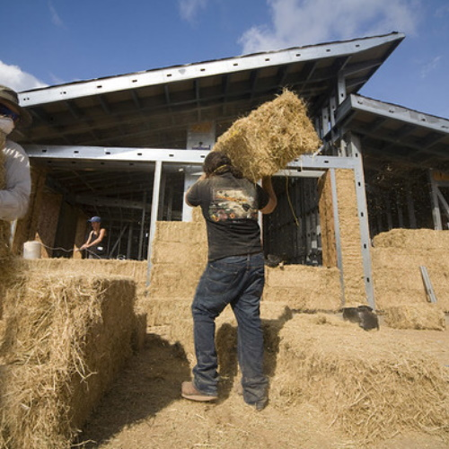

Statistics
145
Certified Projects in Washington DC
3000
Earthships have been built around the world
77%
Of Americans want to live a sustainable lifestyle
Features
The features of a Bio-Friendly home are the core aspect of what makes it environmentially friendly. Before you begin construction, it's important to actually find out what you will or will not be installing.

Solar Energy
A Solar Panel is practically a must have for any Bio-Friendly home. Solar Panels convert sunlight into electricity that could be used for anything in your home. This type of energy is entirely renewable and is becoming more efficient yet cheaper. As of now residential solar panels can convert around 20% of the sunlight into electricity with commercial variants converting around 40%. They also require very little maintenance while also being incredibly versatile so that almost any home could have them installed. These panels typically come with a 25 year warranty, but if treated correctly, can last up to 30 to 40 years without seeing any efficiency decrease. When planning for the installation of a Solar Panel, check with your local town hall as to find any possible required permits.
Solar energy users save, annually, as much as 75 million barrels of oil and 35 million tonnes of carbon dioxide. Plus, a huge amount of power can be harnessed from the sun: in just one hour, the Earth receives more energy than it would consume in an entire year (approximately 120 terawatts). On top of the environmental benefits, solar panels can help you save plenty of money in the long run.
The price to buy a solar panel can vary, but the average 6kW system will cost you around $15,000 before tax credits and rebates. This number may seem high at first but in the long run it is practically earning you money. The money you save from your electricity bill covers what you paid for the panel, and on average it only takes 8 years to break even and have an average lifetime savings of around $51,000. On top of that, a solar panel can significantly increase th-e price of your home and can even grant you government aid.

Geothermal
Geothermal heat pumps (GHPs) can keep your house both heated and cooled, whilst also supplying hot water by transferring heat to or from the ground. Normally, consumers choose between two versions when deciding on a GHP, either a closed- or open-loop design, but the most commonly used is the closed-loop, with nearly 85% of GHPs in America using this design. The pipes are made of plastic tubing and are buried horizontally (up to six feet deep) or vertically (up to 600 feet deep). The design of a ground heat exchange system can also vary depending on the climate, soil conditions, land availability, accessibility to groundwater or surface water bodies, and installation costs. GHPs can operate in any condition due to the earth’s constant underground temperature of around 55°. In fact, millions of GHP systems are already heating and cooling homes and businesses worldwide, and that includes all 50 U.S. states. This technology may sound pretty advanced, but it has actually been used for more than 50 years now, cutting nearly 65% of energy bills compared to the average HVAC unit.
In America, around 11% of our total carbon emissions come from heating and cooling both residential and commercial buildings, but those with a GHP produce zero emissions due to their higher energy efficiency. This change is so great that it can even help negate two cars worth of emissions every year and lightens the load on the electric grid. On top of that, GHPs are much safer for your home than the traditional HVAC system. Since they rely solely on the earth, there are absolutely zero risks of gas explosions or carbon monoxide leaks.
Compared to the installation of a normal HVAC system, a GHP unit can be significantly more expensive, however GHP systems are up to 65% more efficient that the average HVAC unit, causing them to practically pay themselves off within 10 years. Since oil and natural gases are non renewable resources, their prices frequently fluctuate, however the price of a GHP will seldomly change due to their reliance on the earth's constant temperature. The cost to install a GHP used to be upwards of $50,000, however, new designs have significantly lowered the market value down to $18,000 to $20,000.

Wind Energy
By using the wind to spin giant blades, windmills can generate electricity that can be used for any purpose. Commercial windmills are around 20 stories high with blades as long as football fields, and can generate enough electricity to power 1,400 homes, however they are extremely expensive and require a lot of land that most consumers simply don’t have. The residential variants for windmills are around 30 feet high with blades around 8 to 25 feet in length and produce less than 50 kw for homes, however they don’t always work at their peak condition due to the constantly changing winds. When planning for a Windmill you must make sure that it will be at least 30 feet above any buildings or trees within a 300 foot radius, and that there won’t be any hills or buildings to obstruct the wind flow. With proper installation and maintenance, a windmill can last up to 20 years or longer. Windmills also require a fair bit of maintenance from time to time that can include checking the bolts and replacing the blades every 10 years if necessary. The best combination for an off the grid system is a solar panel and windmill combo so that you would never have to worry about the lack of wind or sunlight.
The best part about wind energy is that no matter how much is used, there will always be more. Not only is it entirely renewable, but it is also a source of clean energy. Normal power plants push tons of pollutants and greenhouse gasses into the air, but wind energy is perfectly clean. According to the U.S. department of energy, in 1990, California's windmill plants offset the pollution by nearly 2.5 billion pounds of carbon dioxide, and 15 million pounds of other emissions. It would take nearly 175 million trees to provide similar results.
Even though the cost of wind power has decreased dramatically in the past 10 years, the technology requires a higher initial investment than fossil-fueled generators. Roughly 80% of the cost is the machinery, with the balance being site preparation and installation. If wind generating systems are compared with fossil-fueled systems on a "life-cycle" cost basis (counting fuel and operating expenses for the life of the generator), however, wind costs are much more competitive with other generating technologies because there is no fuel to purchase and minimal operating expenses. The cost of running a power line to a remote site to connect with the utility grid can be prohibitive, ranging from $15,000 to more than $50,000 per mile, depending on terrain.You would like to gain energy independence from the utility.You would like to generate clean power.

Eco-friendly insulation
Home Insulation has the same goal: to reduce heat loss in the winter and heat gain in the summer. This has the positive effect of making your home more efficient, which helps you save money on your energy bills and reduce the emissions associated with heating and cooling your home. This is good news for the environment, but if you want to go one step further, you can choose an eco-friendly insulation material! Cellulose insulation is considered one of the most environmentally friendly insulation materials because it’s made of 80 to 85% recycled newsprint. Who knew you could insulate your home with yesterday’s news? The remaining 15% consists of borax, boric acid or ammonium sulfate to make the newsprint fibers more fire resistant. Borate-based flame retardants have the added benefit of helping repel insects, all while remaining safe for use. Cellulose is more eco-friendly than other materials. You can install it on open attic floors, in existing walls and more. Cotton is a popular clothing material used to produce blue jeans. At the end of the manufacturing process, scraps of denim can be recycled into cotton insulation. About 85% of this material is made from recycled denim, while the remaining 15% is comprised of plastic treated with borate. Sheep’s wool provides an insulation that’s naturally fire-resistant, but manufacturers typically still add borate to resist pests and mold. Wool even continues to insulate efficiently if it gets wet. Best of all, sheep continue to grow wool throughout their lifetime, making this one of the most natural and renewable resources in the world.
Choosing eco-friendly insulation options such as: Cellulose, Cotton, and Wool insulation reduces the use of fiberglass which is an irritant and increases energy efficiency in your home. Contact with insulation wool fiberglass can cause skin irritation such as redness and itchiness, as well as difficulty seeing and breathing. Also you can reduce heat loss in your home by 67 percent by installing wall insulation where there previously was none and also can decrease heating and cooling costs by up to 40 percent by installing adequate attic insulation. So you are going to need insulation in your new Bio-Friendly home in order to reduce the heat and cooling costs. Also by choosing to use eco-friendly insulation you are proactively bettering the environment by using recycled materials and lowering production of harmful insulation.
Eco-friendly insulation is surprisingly inexpensive compared to traditional fiberglass that costs between $0.64 and $1.19 per square foot. An example, Cotton insulation, costs between $0.76 and $1.41 per square foot, making it slightly more expensive eco-friendly alternative to fiberglass. Also, Cellulose insulation cost $1.02 per square foot, it is an eco-friendly alternative to fiberglass that is similar in price. Finally, Wool insulation cost approximately $0.67 per square foot, this is effectively a cheaper eco-friendly alternative to fiberglass. These options have the positive effect of making your home more efficient, which helps you save money on your energy bills and reduce the emissions associated with heating and cooling your home.

Rain Water Collector
Collecting rainwater is a very underutilized aspect of a Bio-Friendly home, especially when it can be so easily implemented and add up to 4-6 points to your LEED score. A rainwater collector does exactly what you think it would, collects the falling rain. This is normally done by letting the rainwater that falls from the sky run off your roof and into gutter systems that go into a storage container called a cistern. The great thing about rainwater is that it’s already purified, so you don’t have to deal with the purification process that includes chemicals like chlorine, and is also an abundant source of soft water. In housing there is soft and hard water, hard water can clog up your pipes due to the chemicals and ruins the overall quality, but soft water is perfectly clean. To keep this water clean it’s important to use roofing such as aluminum, tiles, and slate or galvanized corrugated iron. Normal roofing materials would ruin the water due to their asphalt or metallic finishes. It's also important to regularly clean the roof/gutter system and cover the water so that bugs aren’t attracted to it. If you want to use the water for your house's daily needs then you might have to get some permits and do a little construction, but simply drinking water is perfectly fine, and some states even require a system to collect rainwater. Over 120,000 gallons of water falls on the average home a year, and unless you live in Utah or Colorado, there is absolutely nothing stopping you from collecting water that is practically free.
The impact rainwater collecting has on the planet can show in some unlikely areas. Since the rain water is naturally soft, it can take a lot of strain off of your hot water tank, with some even keeping their original factory rating for 15 years, meanwhile hard water could reduce its performance by nearly 50%. Another benefit is taking the load off of diminishing water supplies. Around 77 billion gallons of groundwater are used every day on the earth, but this is not an infinite source. By using rainwater you can do your part in cutting the reliance on groundwater sources. Rainwater is simply better in every way, you don’t have to use toxic chemicals to purify it, it’s much better on your plumbing, you have more aquatic independence, and best of all, its free!
The price to implement a rainwater system can vary greatly. If you simply want some drinking water then in some cases you wouldn’t need anything more than a barrely beneath your gutter spout, but if you want to replace as much of your homes reliance on city water as possible, then a full system with filters might be for you. The price to implement your own system can be anywhere between $200-$20,000. It's important to check the average rainfall statistics in your area to see if a full rainwater system would be a worthy investment. In most cases, simply having the system can significantly increase your property value and decrease building costs.

Earthship Bio-Shelter
An Earthship Bioshelter is essentially the peak of a Bio-Friendly home. These homes are made of 100% recycled materials such as tires, tin cans, and rubber while also being practically indestructible. They are built to be entirely self sustaining and off the grid, due to this they are meticulously detailed, from the angle of the windows, the shape of the house, and even its direction towards the equator. Common features include rainwater collectors, autonomous heat generation, and in most cases, even generating electricity. These descriptions may make the home seem a little weird, but they are actually very modern, and even held to the same building codes. They are meant to perfectly replicate life of a normal house, but with the benefits of Bio-Friendly living. The Earthship Bio-Shelter is the perfect all in one package for anyone interested in taking their part in living green.
The impact an Earthship BioShelter has on the planet is practically self explanatory. The homes are entirely made from recycled materials, are entirely self sufficient, and cost significantly less to maintain. Because the Earthship is a combination of multiple different features, you are inherently taking in the benefits and impact of them. The earthship is extremely customizable therefore it can be hard to pinpoint exactly what impact it has, but without a doubt, the Earthship has the largest impact on the planet out of all of the features combined.
The price of an earthship BioShelter is actually pretty similar to that of a normal house. Since they are held to the same standards as an average home, they are required to get the same permits and follow the same codes that house would need. The cost can range between $100,000 for their smaller models to $1.5 million for their largest and best model, the Phoenix Earthship, or you could enroll in a one-month training program for $2,500 to learn how to build one yourself. The prices may be similar, but because they are built to be entirely self sufficient, on average, you would only be paying $150 on utilities every year.